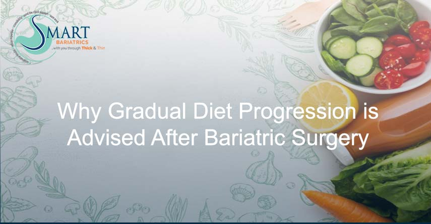

Understanding Gradual Diet Progression After Weight Loss Surgery: Key to Healing and Success
Gradual Diet Progression After Weight Loss Surgery
Candidates for bariatric surgery often wonder why there is a gradual progression of diet after weight loss surgery?? They ask me why they have to be on a liquid diet for the first 15 days, and they question me if they have to be on liquids for weight loss then why surgery is required?? It is important to make prospective patients understand that they have a key role in their healing process. They have undergone a major change physically and emotionally. The purpose of dietary phases is to provide appropriate time for proper healing. Also, gradual progression helps decrease acid reflux, provide early satiety, prevent dumping syndrome while maximising weight loss and at the same time prevent lean body mass during the period of extreme weight loss.
That is why the gradual dietary progression must be adhered to strictly in order to support tissue healing, aid in weight loss and prevent possible complications.Phases of Post-Surgery Diet
The diet progresses in 4 phases, such as: • Clear liquids • Full liquids • Pureed diet • Soft to normal dietClear liquids include sugar-free, non-aerated liquids that supply fluid and electrolytes and also help encourage the restoration of gut activity after surgery. Patients usually follow this diet post-operatively during hospital stay only, i.e. 1 to 2 days. From the day of discharge, they may start introducing full liquids including skimmed milk, lassi, buttermilk, strained veg/dal, and chicken soups etc. and continue the same for 2 weeks. Then from week 3, they are advised to take a pureed diet consisting of foods that have been blended or liquified to a puree consistency like milkshakes, well-cooked and mashed pulses and vegetables, scrambled eggs and grilled fish. They need to be on a pureed diet for the next 2 weeks. After 4 to 5 weeks of surgery, they may gradually progress from a soft to a normal diet including well-cooked foods, avoiding sugary and fatty meals.
The post-surgery diet is designed to restrict calorie intake, as well as to help develop appropriate eating habits and diet behaviour to promote weight loss while maintaining good nutritional status.Nutritional Goals and Diet Behaviour
The primary nutritional goals and diet behaviour involve: • Taking adequate liquids say around 1 to 1.5 lts to stay hydrated. • Consume protein first in each meal to minimize loss of lean body mass and facilitate healing. It is usually difficult to get enough protein through food which is why protein supplements are recommended to meet the needs. • Avoid 5 “S”, i.e. Sugar, Spirits, Smoking, Soda and Straw.Sugar and spirits are avoided to prevent dumping and also to aid weight loss, straw and soda may cause bloating and patients may suffer from stomach discomfort, pain or feeling of fullness. Smoking is prohibited to prevent reflux and marginal ulcers.
Bariatric surgery procedures alter the gastro-intestinal tract, hence modifying many food-related behaviours such as portion size, perception of taste and smell, likes and dislikes or food choices. Patients are advised and educated to learn new diet behaviours to easily adapt modifications. They should eat at regular intervals, including 6 to 7 meals a day. They are advised to chew the food very well and eat at a slow pace. Avoid drinking liquids along and for 30 minutes before and after meals as drinking beverages along with meals can cause early satiety and may hinder adequate protein intake. The meal portion should be small to avoid overeating and vomiting.
At our Institute we assess each patient in detail pre-operatively to recognize their nutritional and dietary patterns as well as to evaluate their ability to incorporate nutritional changes after weight loss surgery.
Each patient may have a different capacity and appetite to eat; one should listen to his/her body as to when to stop eating. Be definite to abide by the instructions of your surgeon and/or dietitian to reduce your risk of developing malnutrition and surgical complications and all of this will be well worth it!
For more diet and nutrition-related queries, talk with the top nutrition counsellor in Delhi at Smart Cliniqs. Back to Blog